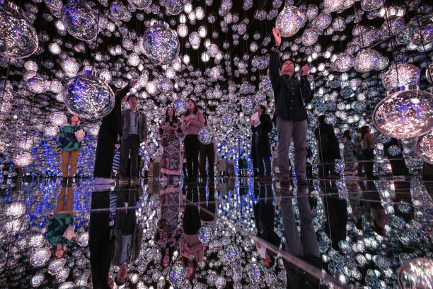
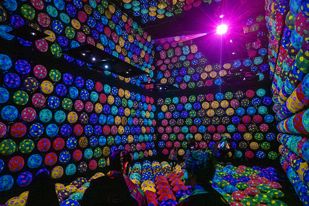
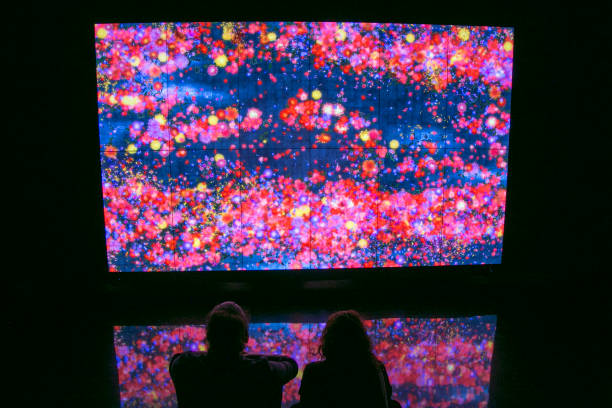
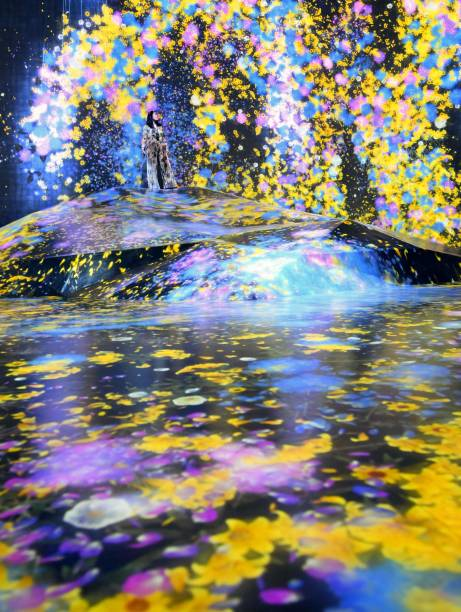
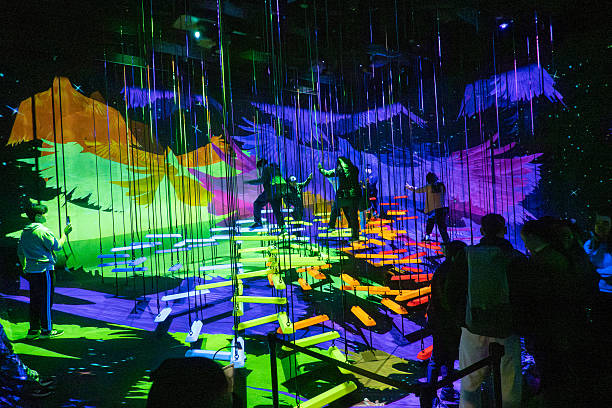

Trayectoria y reconocimiento internacional

Desde sus primeros proyectos, teamLab se destacó por desarrollar propuestas que trascendían las categorías artísticas convencionales.
Su enfoque colaborativo permitió integrar conocimientos de diversas disciplinas para crear experiencias innovadoras que combinan creatividad y tecnología avanzada.
A lo largo de los años, el colectivo ha presentado exposiciones en museos, galerías y espacios culturales de numerosos países.
Sus instalaciones atraen a millones de visitantes y han contribuido a popularizar el arte digital inmersivo a nivel global.
Uno de sus mayores logros ha sido la creación de museos permanentes dedicados a experiencias digitales interactivas.
Estos espacios han consolidado su reputación como una de las organizaciones más influyentes en el desarrollo del arte tecnológico contemporáneo.
Crear mundos digitales en constante transformación

La metodología de trabajo de teamLab se basa en la colaboración entre especialistas de distintas áreas. Artistas, ingenieros, programadores y diseñadores trabajan conjuntamente
para desarrollar sistemas capaces de generar imágenes, sonidos y comportamientos dinámicos que responden al entorno y a la interacción humana.
Las obras son concebidas como ecosistemas digitales donde cada elemento influye sobre los demás. Los movimientos de los visitantes pueden alterar la apariencia de una instalación,
modificar trayectorias visuales o provocar nuevas animaciones, creando experiencias únicas e irrepetibles para cada persona.
Obras y conceptos clave
-
Borderless

-
Planets

-
Flowers and People

-
Universe of Water Particles

-
Arte inmersivo

- Interactividad digital